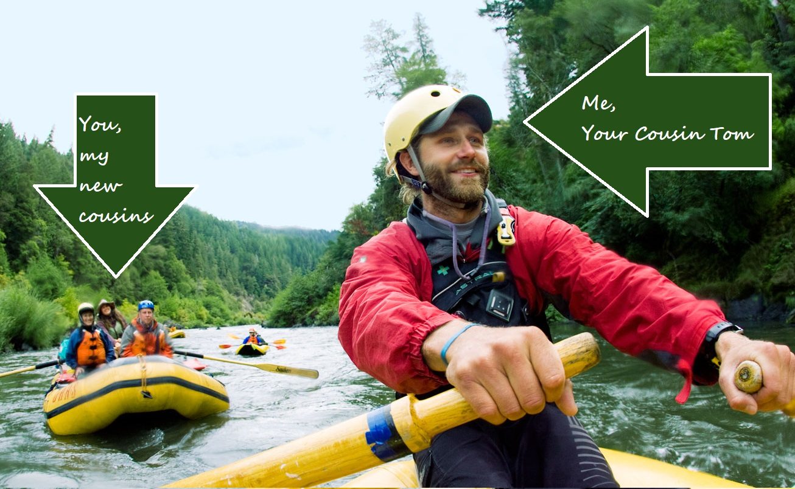

Our Story
My story began when I was 10 years old. That's the first time I went rafting with my cousin, an experienced raft guide down the river. I didn't know it then, but the beauty of nature, and the love of my family that I felt that day was a defining moment in my life. After getting a degree in Computer Science and a cozy desk job, I thought I had it all. As the years ticked by though, I often found myself looking back to my happiest memories on the river for comfort and support.
After a bout with leukemia, I needed to get out of the city. After a few years of running the river under master "River Jack," I opened up this business to give you and yours the same kind of refreshing joy and family-like friendliness that I got when I was a boy. Hope to see you son! - Tom